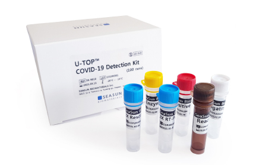
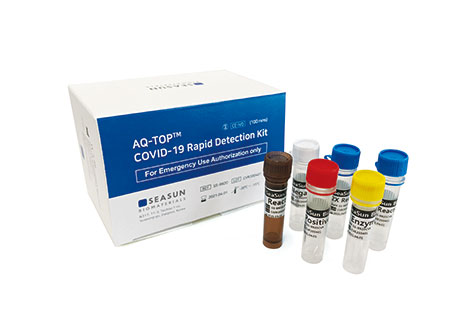
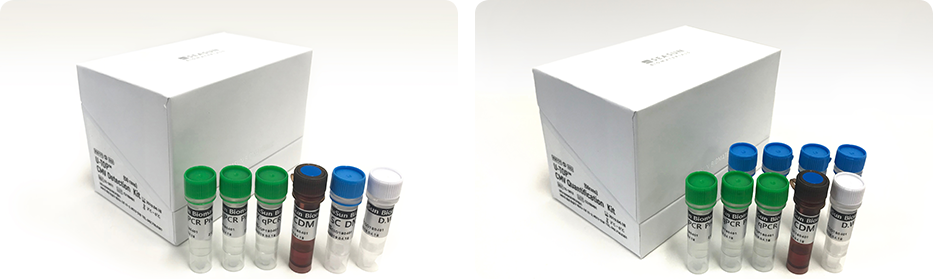
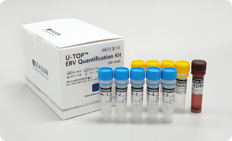

U-TOP™ COVID-19 Detection Kit(CE-IVD)
New Coronavirus (COVID-19) Detection kit

※Prohibit unauthorized copying and distribution
Product review
U-TOP™ COVID-19 Detection Kit is an in-vitro diagnostic product intended for Real-time PCR based
detection of new Coronavirus (COVID-19) infection via simultaneous amplification of ORF1ab and N-gene in
patients with suspect COVID-19 infection.
* This product is an in-vitro diagnostic medical device, please be sure to read Instruction manual
first.
AQ-TOP™ COVID-19 Rapid Detection Kit(CE-IVD)
New Coronavirus (COVID-19) Rapid Detection
Kit

※Prohibit unauthorized copying and distribution
Product review
The AQ-TOP™ COVID-19 Rapid Detection Kit is a PNA mediated Real-Time Loop Mediated Isothermal
Amplification test intended for the qualitative detection of SARS-CoV-2 in upper and lower respiratory
specimens via amplification of virus ORF1ab, with human RNase P as an endogenous control. Positive
results are delivered in as few as 15 minutes, Negative results in 30 minutes.
* This product is an in-vitro diagnostic medical device, please be sure to read Instruction manual
first.
U-TOP™ CMV Detection / Quantification Kit
U-TOP™ CMV Detection Kit
U-TOP™ CMV Quantification
Kit

Product review
A cytomegalovirus is a sort of herpesvirus which is the most frequent congenital infection which occurs
in about 1% of new born babies throughout the world. U-TOP™ CMV Detection / Quantification Kit is the
test reagent for the qualitative and quantitative analysis through the real-time PCR technique after the
extraction of DNA from the blood plasma and urine of a patient with suspected infection.
U-TOP™ EBV Quantification Kit
Reagent for quantitative detection of Epstein-Bar virus

Product review
Epstein-Bar virus (EBV) belongs to Group 1 carcinogens, which causes stomach cancer as well as
infectious mononucleosis. U-TOP™ EBV
Quantification Kit adopts PCR which enables identification of any detection of DBV as well as
quantitative measurement by separating DNA
from the serum of a patient suspected to be infected with EBV.